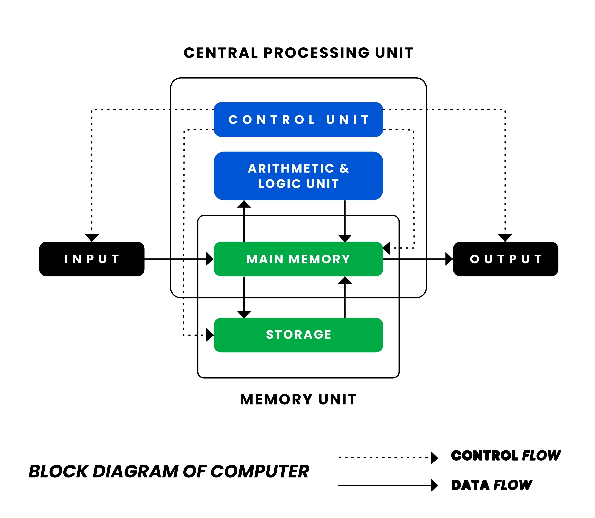

Q1
You are explaining the working of a computer system to new students. Draw a neat block diagram of a computer and describe the function of each unit in the system.
✅ Answer:
📌 Block Diagram of Computer System

Central Processing Unit (CPU) - The Brain of Computer
Input Devices
→
CPU
→
Output Devices
↑
Memory Unit
📌 Explanation of Units
1️⃣ Input Unit
The input unit is used to enter data and instructions into the computer.
✅ Functions:
- Accepts data from the user
- Converts data into machine-readable form
- Sends data to CPU
✅ Examples: Keyboard, Mouse, Scanner, Microphone
2️⃣ Central Processing Unit (CPU)
CPU is the brain of the computer system. It processes data and controls all operations.
(a) Arithmetic Logic Unit (ALU)
- Performs arithmetic operations: +, −, ×, ÷
- Performs logical operations: AND, OR, NOT
(b) Control Unit (CU)
- Controls and coordinates all computer activities
- Directs data flow between memory and CPU
(c) Registers
- Small, fast memory inside CPU
- Stores temporary data and instructions
3️⃣ Memory Unit
Memory unit stores data, instructions, and results.
✅ Primary Memory: RAM (volatile), ROM (non-volatile)
✅ Secondary Memory: Hard Disk, SSD, Pen Drive, CD/DVD
4️⃣ Output Unit
The output unit displays processed results to the user.
✅ Examples: Monitor, Printer, Speaker, Projector
✅ Conclusion: A computer system works by taking input, processing it through CPU with the help of memory, and producing output.